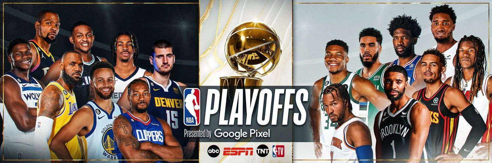

ÚLTIMAS NOTICIAS NBA
Shai quebra recorde dos playoffs, Jokic é expulso e Oklahoma vence Denver
Sérvio é ejetado ainda no terceiro quarto e time da casa faz jogo quase perfeito para empatar a semifinal da Conferência Oeste
Knicks repetem virada sobre Celtics e abrem 2 a 0 na série das semifinais da NBA
Franquia nova-iorquina é a 1ª na história dos playoffs a reverter a desvantagem de 20 pontos em jogos seguidos

Curry tem distensão muscular e desfalca os Warriors por ao menos uma semana nos playoffs da NBA
Astro do Golden State vai perder pelo menos três jogos da série contra os Wolves

Haliburton decide no estouro do cronômetro e Pacers abrem 2 a 0 sobre Cavaliers nas semifinais
Armador do Indiana Pacers acerta cesta de três pontos e vira o jogo no último segundo


Jimmy Butler fala sobre ausência de Stephen Curry
Curry saiu lesionado no segundo quarto diante do Timberwolves
NBA anuncia punição inusitada para astro do Timberwolves; entenda
Anthony Edwards foi multado em 50 mil dólares por imbróglio com torcedores do Lakers

Site avalia troca de Zion Williamson para o Heat
Rumores sobre situação do ala-pivô e da franquia tem sido frequentes

Fred VanVleet e Rockets entram em acordo por contrato – saiba detalhes
Armador foi um dos principais nomes de Houston nos playoffs